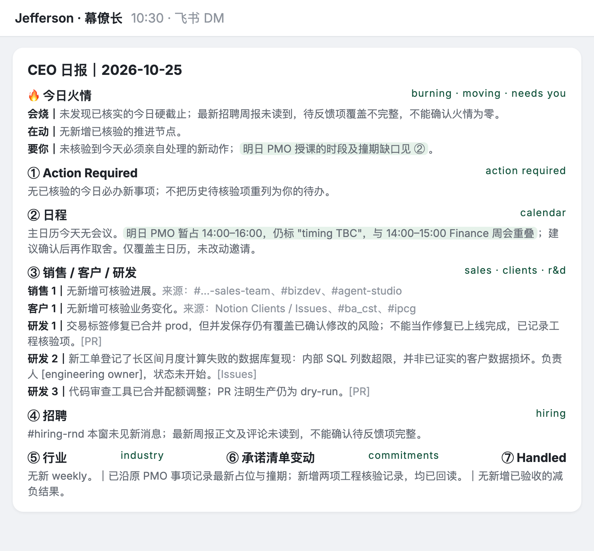
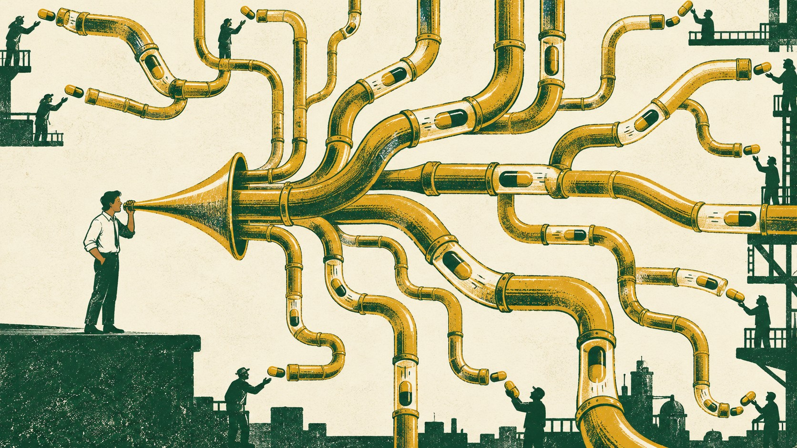
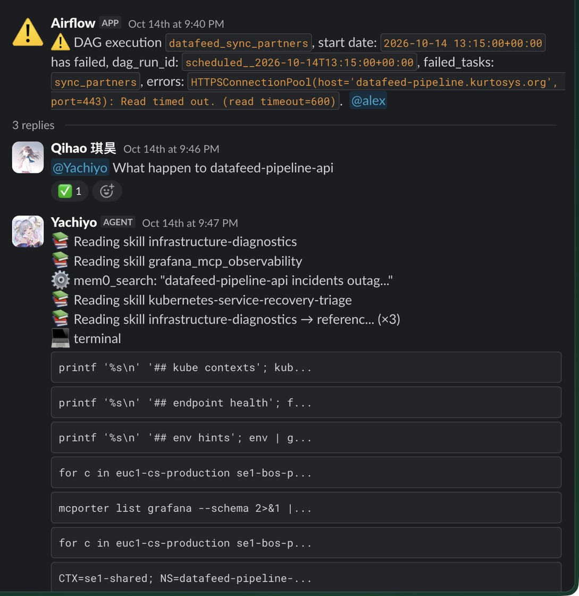
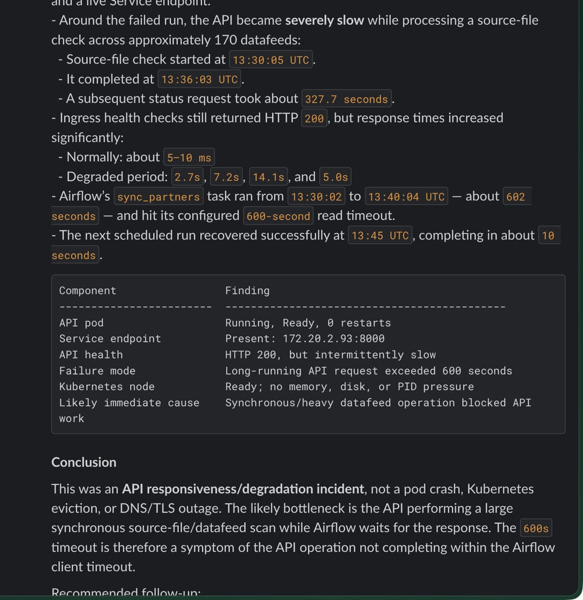
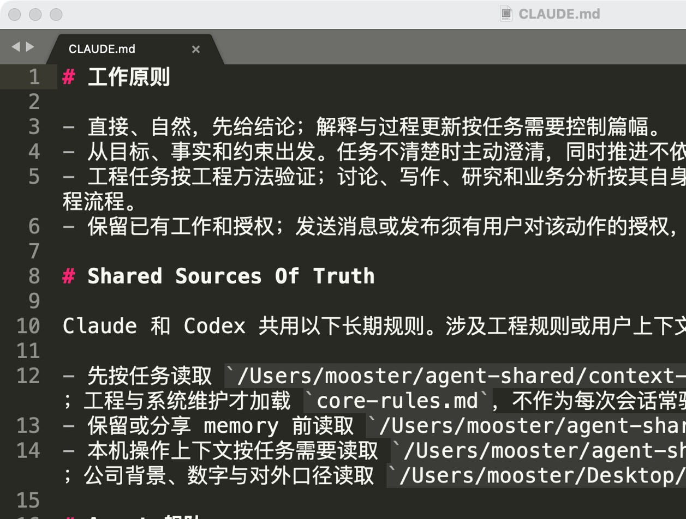
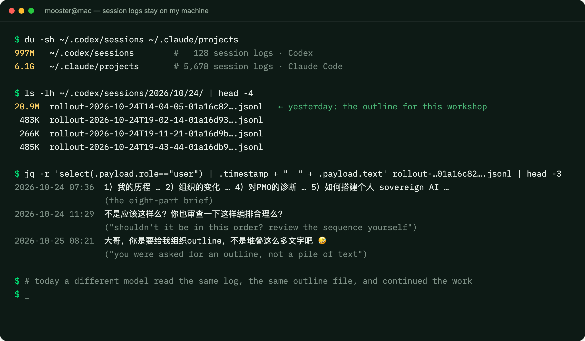
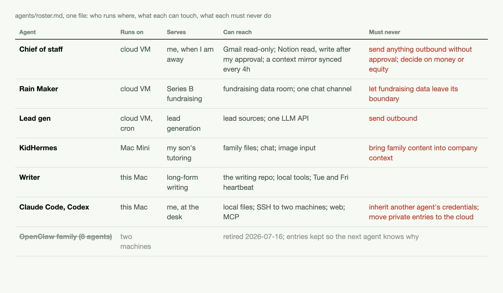
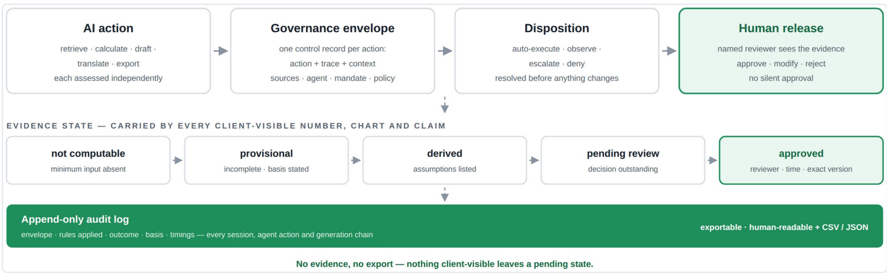
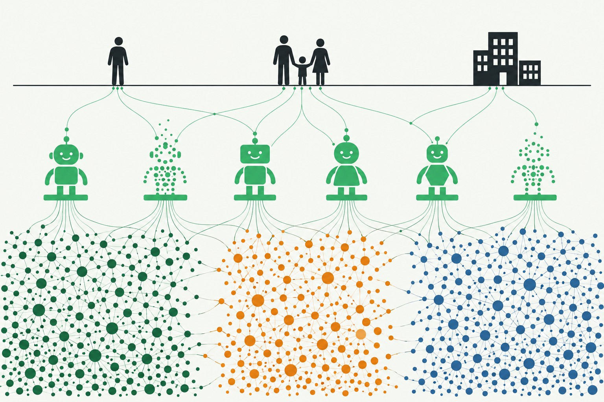

canopyCentre for Strategic Futures, PMO Strategy Group, 26 Oct 2026
Your cognition is the ceiling of your AI. Own it, build it, and break it.
Practical lessons from building an AI working system for you and your organization
Mu Chen, CEO of Canopy, with Qihao Wu
Current snapshotCanopyYour surveyHow I thinkMy systemThe organizationWhat's next
canopy
Four blocks, one task you bring
45 min
Mu, what I built, how it is wired, what an organization can own
10 min
Questions
35 min
Qihao, from LLM to agents: how models, context and agents turn delegation into work
10 min
Questions
Before we start
You already described one task in the survey. Keep it in mind.
The one you would like to hand to AI but do not yet trust it with. We come back to it at the end.
Canopy, Own Your AI, Centre for Strategic Futures, 26 Oct 20262
Current snapshotCanopyYour surveyHow I thinkMy systemThe organizationWhat's next
canopy
I run a company on AI, and I want to build my future here
~100
family office clients
Canopy uses AI to solve wealth-management and operations problems for family offices.
10
countries and regions
Singapore, Hong Kong, the Gulf, Southeast Asia and beyond. We work with banks, not against them.
$160B+
assets under reporting
Reporting coverage, not assets we manage, and not a result of AI.
Why here
Canopy is built in Singapore. You study the long term, and AI is the biggest variable in it.
Canopy, Own Your AI, Centre for Strategic Futures, 26 Oct 20263
Current snapshotCanopyYour surveyHow I thinkMy systemThe organizationWhat's next
canopy
Today: part of how I work is engineered
Canopy, Own Your AI, Centre for Strategic Futures, 26 Oct 20264
Current snapshotCanopyYour surveyHow I thinkMy systemThe organizationWhat's next
canopy
Every layer I wrote down cut my input: ten sentences to one
Canopy, Own Your AI, Centre for Strategic Futures, 26 Oct 20265
Current snapshotCanopyYour surveyHow I thinkMy systemThe organizationWhat's next
canopy
My setup: me, two entry points, a crew, and guardrails
Canopy, Own Your AI, Centre for Strategic Futures, 26 Oct 20266
Current snapshotCanopyYour surveyHow I thinkMy systemThe organizationWhat's next
canopy
From one worker to a crew: 0 to 277 sub-agents a month
Canopy, Own Your AI, Centre for Strategic Futures, 26 Oct 20267
Current snapshotCanopyYour surveyHow I thinkMy systemThe organizationWhat's next
canopy
Four ways I work with the system, and my part in each
Canopy, Own Your AI, Centre for Strategic Futures, 26 Oct 20268
Current snapshotCanopyYour surveyHow I thinkMy systemThe organizationWhat's next
canopy
The 10:30 brief: eight sections, every line traceable

Canopy, Own Your AI, Centre for Strategic Futures, 26 Oct 20269
Current snapshotCanopyYour surveyHow I thinkMy systemThe organizationWhat's next
canopy
The paradigm changed, not just the speed

The entry point moved
From opening apps to one sentence to an always-on agent. 7 → 1 inputs per session.
The middle hollowed out
Dozens of thirty-word decisions, and runs that last days. Doing it by hand disappears.
Attention is the budget
When to look, when not to, when to stop. The scarce resource moved from hours to attention.
Canopy, Own Your AI, Centre for Strategic Futures, 26 Oct 202610
Current snapshotCanopyYour surveyHow I thinkMy systemThe organizationWhat's next
canopy
The organization
What happened when the same approach entered Canopy.
Canopy, Own Your AI, Centre for Strategic Futures, 26 Oct 202611
Current snapshotCanopyYour surveyHow I thinkMy systemThe organizationWhat's next
canopy
Every agent reports to a person
Canopy, Own Your AI, Centre for Strategic Futures, 26 Oct 202612
Current snapshotCanopyYour surveyHow I thinkMy systemThe organizationWhat's next
canopy
Last week at Canopy: 33 scheduled jobs, 162 reports, 15 channels
15
documented cases, 8 kinds of work
Sales and client research, product and delivery communication, project tracking, data operations, infrastructure and logs, engineering review, content, team briefings
Canopy, Own Your AI, Centre for Strategic Futures, 26 Oct 202613
Current snapshotCanopyYour surveyHow I thinkMy systemThe organizationWhat's next
canopy
Qihao asks what broke; ten minutes later, the root cause


9:46 the question, 9:47 the trace, 9:56 the answer
Left: the agent loads its diagnostics skill, searches past incidents, then runs checks within its access. Right: findings and conclusion. Not a crash: a 602-second scan against a 600-second timeout.
Not always this clean
On 19 Oct a similar question hit a stalled agent; the stall was posted in the same channel. Both visible, both owned.
Canopy, Own Your AI, Centre for Strategic Futures, 26 Oct 202614
Current snapshotCanopyYour surveyHow I thinkMy systemThe organizationWhat's next
canopy
Five stages, each one forced by the last one breaking
01
A few people use AI
Each on their own; the experience stays with the individual.
broke: nothing transferred
→
02
AI opened to everyone
Everyone gets access; it grows wild. Usage takes off.
broke: no shared context
→
03
One general-purpose agent
One agent that does everything.
broke: permissions, context and skills unmanageable
→
04
Specialist agents
One per function, under a named person, with a job description.
broke: hand-offs between them
→
05
Many agents, many people, governed
Agents delegate to each other; people sit in the approval seat; permissions, logs and reviews written into a framework.
current
Canopy, Own Your AI, Centre for Strategic Futures, 26 Oct 202615
Current snapshotCanopyYour surveyHow I thinkMy systemThe organizationWhat's next
canopy
Your survey
Eleven of you answered. What blocks you, what you want, and what you already do.
Canopy, Own Your AI, Centre for Strategic Futures, 26 Oct 202616
Current snapshotCanopyYour surveyHow I thinkMy systemThe organizationWhat's next
canopy
Eleven answers: mostly level 3, eight or more days a month
Canopy, Own Your AI, Centre for Strategic Futures, 26 Oct 202617
Current snapshotCanopyYour surveyHow I thinkMy systemThe organizationWhat's next
canopy
The blockers are access and confidentiality, not reliability
Canopy, Own Your AI, Centre for Strategic Futures, 26 Oct 202618
Current snapshotCanopyYour surveyHow I thinkMy systemThe organizationWhat's next
canopy
Which AI concepts could you explain in your own words?
Canopy, Own Your AI, Centre for Strategic Futures, 26 Oct 202619
Current snapshotCanopyYour surveyHow I thinkMy systemThe organizationWhat's next
canopy
What is the most complex thing you have used AI to do?
Policy and futures, level 3, 16 to 24 days
Connected AI to the team’s horizon-scanning documents; a weekly internal newsletter of blind-spot signals, improved on a loop.
Part 5
Research and communications, level 2, 25 to 30 days
Sifts a running technology-news list against their own criteria; reviews what it missed and feeds the misses back into the instructions.
Part 5
Research and policy, level 3, 8 to 15 days
Two documents in: five emerging topics and other teams’ feedback. Improved write-ups, then scenarios from the interactions.
Part 5
Policy and futures, level 5, 25 to 30 days
Several vibe-coded web apps in production; one runs agents that file signals into a database for foresight and talks over Telegram.
Policy, research and communications, level 3, 8 to 15 days
A thinking partner to develop a theory, surface assumptions and test them against interviews, desk research and discussion.
Part 5
Policy, research, communications and management, level 3, 8 to 15 days
Tried to build an agent that scores documents against a strategic frame from a paper, pulling context from Outlook and SharePoint.
Policy and research, level 3, 16 to 24 days
Co-created a chatbot that works as a virtual interviewer for a wide range of interviewees.
Policy, level 2, 25 to 30 days
A pipeline that captures, transcribes and stores stakeholder-engagement notes; the repository is the context for later tasks.
Research, level 2, 3 to 7 days
A recurring task, handed over with the topic, sample content and objectives.
Canopy, Own Your AI, Centre for Strategic Futures, 26 Oct 202620
Current snapshotCanopyYour surveyHow I thinkMy systemThe organizationWhat's next
canopy
What questions about AI would you most like to explore?
Research and policy, level 3
“Is there a certain guide or phrasing you always use? What components should always be included in a prompt?”
Answered at Foundation 01: not a better prompt, a file the model reads first.
Research and communications, level 2
“How do you build an agentic workflow when neither the path nor the destination can be specified upfront? Can an agent make course corrections itself?”
Answered at Operating mode 05 and the review loop: bounded tasks out, misses written back.
Policy and futures, level 3
“The entire world of agentic AI. And knowledge management: if I left my team today, all the context and process behind my AI work would be lost.”
Answered at Foundation 02 and Part 6: the agent is a folder the team owns.
Policy, research and communications, level 3
“How do we think about whether to use AI, and when? And how to organise and housekeep AI outputs, in case the AI cannot be accessed?”
Answered at Part 4 and Foundation 02: the notebook lives in a folder you own.
Canopy, Own Your AI, Centre for Strategic Futures, 26 Oct 202621
Current snapshotCanopyYour surveyHow I thinkMy systemThe organizationWhat's next
canopy
Your stack covers two of these parts; ownership starts in the gaps
Canopy, Own Your AI, Centre for Strategic Futures, 26 Oct 202622
Current snapshotCanopyYour surveyHow I thinkMy systemThe organizationWhat's next
canopy
Discussion: 5 minutes
Where does your work break?
Back to the task you wrote down. Missing context? Access? A method? Trust in the result? Two or three examples for the room.
“AI doesn't do ‘weird’ very well.” CSF, Honing Our Edge, August 2026. Agreed. Everything before ‘weird’ is what you can hand over.
Canopy, Own Your AI, Centre for Strategic Futures, 26 Oct 202623
Current snapshotCanopyYour surveyHow I thinkMy systemThe organizationWhat's next
canopy
Before the machinery, get the meta-thinking going first
Why AI is hard to understand, one chain of reasoning, and what changes in the person.
Canopy, Own Your AI, Centre for Strategic Futures, 26 Oct 202624
Current snapshotCanopyYour surveyHow I thinkMy systemThe organizationWhat's next
canopy
Understanding AI takes at least 10 fields, probably more
What it is
Math what it is: a sampler
Statistics when to trust it
Philosophy two kinds of judgment; what intelligence is
Neuroscience an artificial neural network, unlike the brain's
Using it
Engineering how models work, LLM, MCP and the rest of the vocabulary
Economics the fourth factor; where value migrates
Living with it
Politics the redistribution of power
Law a new being; how to define its legal personhood
Sociology a new species entering organizations and society
Religion how to live with a non-human intelligence
Whichever circle you enter from, that is what you think it is.
Canopy, Own Your AI, Centre for Strategic Futures, 26 Oct 202625
Current snapshotCanopyYour surveyHow I thinkMy systemThe organizationWhat's next
canopy
One chain of reasoning
01
A second type of intelligence is here. It is not a replacement; it is different in kind from human intelligence
Different in constitution, not in capability: copyable, ownable, no stake, revocable. The capability line moves every six months; the constitution doesn't.
02
So it is not a tool to use. It is a fourth factor of production, to be governed
It works like labor, can be owned and copied like capital, but bears nothing. Three questions: who owns it, how it is allocated, who answers when it fails.
03
Information in and out got cheap. What is scarce: agency, judgement, taste. And someone always has to bear the consequence
Four verbs: define, select, verify, bear.
04
We are still "pulling a Tesla with a horse"
It runs on old infrastructure designed for humans. Every current form is transitional, and the transition is faster than six months ago.
Canopy, Own Your AI, Centre for Strategic Futures, 26 Oct 202626
Current snapshotCanopyYour surveyHow I thinkMy systemThe organizationWhat's next
canopy
The psychology changes too
More meta-thinking
No longer executing details. All day thinking about "what should be done" and "how to make it do it well": planning, decomposing, verifying.
Anxiety from AI
Pushed to the very frontier. Ahead is nothing but uncertainty; humanity has no answer, and the leading researchers are split.
Becoming more "human"
Das Kapital said industrialization alienated people. This is de-alienation: forced back onto the things only a human can do.
Canopy, Own Your AI, Centre for Strategic Futures, 26 Oct 202627
Current snapshotCanopyYour surveyHow I thinkMy systemThe organizationWhat's next
canopy
My personal sovereign AI, dissected
Not eight steps. One body: a foundation, a brain, a way of working, a structure around it, and a loop that keeps it alive.
Canopy, Own Your AI, Centre for Strategic Futures, 26 Oct 202628
Current snapshotCanopyYour surveyHow I thinkMy systemThe organizationWhat's next
canopy
It starts with one text file every model reads first
Foundation 01: plain text

Canopy, Own Your AI, Centre for Strategic Futures, 26 Oct 202629
Current snapshotCanopyYour surveyHow I thinkMy systemThe organizationWhat's next
canopy
Not one instruction box: a map of files, each pointing to the next
Foundation 01: plain text, continued
Canopy, Own Your AI, Centre for Strategic Futures, 26 Oct 202630
Current snapshotCanopyYour surveyHow I thinkMy systemThe organizationWhat's next
canopy
One filing system, kept by me and my agents together
Foundation 02: files, memory, skills
Canopy, Own Your AI, Centre for Strategic Futures, 26 Oct 202631
Current snapshotCanopyYour surveyHow I thinkMy systemThe organizationWhat's next
canopy
Two kinds of skills: meta skills that shape the thinking, and my own
Foundation 02: skills
Meta skills: how the agent thinks with me
Grill me
Before I build anything, it questions the plan until the weak joint shows. No answers, only pressure.
Skill creator
A skill that writes, tests and scores new skills. The system extends itself from a conversation.
Socratic tutor
Only asks, never tells. Runs my son’s tutoring agent; also how I learn a new field myself.
Memory
Every session’s observations indexed and searchable: “did we solve this before, how?”
Red-team panel
A parameterised panel of hostile readers, LP, VC, competitor CEO, before a deck or a memo goes out.
My own skills: how my work gets done
Writing
My voice in 800 lines: five article forms, what I never say, eight review passes, a Chinese lint script.
Data query SOP
How to answer “check this account” against our warehouse: which tables, which checks, how to report.
Lead qualification
Our ideal-customer rules, scoring and the email signals, so any agent grades a list the way I would.
Investor materials
Source verification, comparable cases and copy review for briefs and decks.
Publish, topic radar, presentation
WeChat publishing, newsletter topic scanning, deck structure: each a folder, each reusable by any model.
Canopy, Own Your AI, Centre for Strategic Futures, 26 Oct 202632
Current snapshotCanopyYour surveyHow I thinkMy systemThe organizationWhat's next
canopy
Keep the notebook in a local folder the model can read
From your survey, on files
Policy and research officer, level 3, AI on 8 to 15 days a month
Their questionHow do I organise and housekeep AI outputs, and manage my work so it survives if the AI cannot be accessed?
“I used it as a thinking partner to develop a theory, identify assumptions, and test against many types of data. The AI concluded that our back and forth was akin to having a research notebook.”
What I would do
A local folder, organised the way the model reads. If you cannot, step down one rung.
1. Local folder. Theory, assumptions, data tested: one file each, named so the model finds it. The map on the previous page. 2. No local? The shared drive. With a directory.md and a how-to-use.md, or nobody finds it. 3. No drive? Email. Set your agent to mail you the notebook on a loop. 4. None of that? Describe the situation to your agent and ask it.
Canopy, Own Your AI, Centre for Strategic Futures, 26 Oct 202633
Current snapshotCanopyYour surveyHow I thinkMy systemThe organizationWhat's next
canopy
Five areas plus the context, saved locally: the team owns it
From your survey, on files, memory and skills
Policy and futures officer, level 3, AI on 16 to 24 days a month
Their questionIf I left my team today, all the context and process behind my AI work would be lost.
“I connected AI with my horizon scanning documents to search for signals in our team's blind-spots; asked it to output a weekly internal newsletter of such signals; and provided input for recurring improvement.”
What I would do
Five areas, plus the context it reads, saved locally.
The sources. What counts as a signal. The delivery day. Who reads it. What you corrected over time. Plus the horizon-scanning documents it reads from. All of it in a local folder the team can open. The next person restarts the newsletter on Monday.
Canopy, Own Your AI, Centre for Strategic Futures, 26 Oct 202634
Current snapshotCanopyYour surveyHow I thinkMy systemThe organizationWhat's next
canopy
Every session stays on my disk as raw material
Foundation 03: logs

Canopy, Own Your AI, Centre for Strategic Futures, 26 Oct 202635
Current snapshotCanopyYour surveyHow I thinkMy systemThe organizationWhat's next
canopy
You already run the review loop by hand; keep the misses in a file
From your survey, on logs and the review loop
Research and communications officer, level 2, AI on 25 to 30 days a month
Their questionHow do you build an agentic workflow when neither the path nor the destination can be specified upfront?
“I use AI to sift a technology news list against my criteria. Relevance is not captured neatly by fixed criteria, so I periodically review its summaries to find what it missed, then use those examples to refine the instructions.”
What I would do
The misses are the log. The refined instructions are the skill.
Keep both in files. Then the first pass goes to an agent: read the last five runs, list what I corrected, propose the change. The exploratory judgment stays yours; the bookkeeping does not.
Canopy, Own Your AI, Centre for Strategic Futures, 26 Oct 202636
Current snapshotCanopyYour surveyHow I thinkMy systemThe organizationWhat's next
canopy
Same folder, any model: each used for what it does best
Brain 04: any model
The models I actually use, and what each is for
Canopy, Own Your AI, Centre for Strategic Futures, 26 Oct 202637
Current snapshotCanopyYour surveyHow I thinkMy systemThe organizationWhat's next
canopy
Delegation: a bounded task goes out, a result comes back
Operating mode 05: spawn
Canopy, Own Your AI, Centre for Strategic Futures, 26 Oct 202638
Current snapshotCanopyYour surveyHow I thinkMy systemThe organizationWhat's next
canopy
Delegation is a task card: goal, files, format, return
From your survey, on delegation
Research and policy officer, level 3, AI on 8 to 15 days a month
Their questionWhat components should always be included in a prompt to get the best output?
“I gave AI two documents: five emerging topics relevant for Singapore, and notes from meetings with other teams. I asked it to improve the write-up from the feedback, then generate scenarios from the interactions between the topics.”
What I would do
Goal. Files. Output format. When to come back.
Goal: improve the five write-ups, then scenarios. Files: your two documents, nothing else. Format: five sections, then a scenario table. Return: after the write-ups, before the scenarios, so you can cut. Write the card once.
Canopy, Own Your AI, Centre for Strategic Futures, 26 Oct 202639
Current snapshotCanopyYour surveyHow I thinkMy systemThe organizationWhat's next
canopy
Choose the runtime by what you can inspect, move and revoke
Structure 06: which runtime
Canopy, Own Your AI, Centre for Strategic Futures, 26 Oct 202640
Current snapshotCanopyYour surveyHow I thinkMy systemThe organizationWhat's next
canopy
Split agents by permission, information and context
Structure 07: one agent or many

Canopy, Own Your AI, Centre for Strategic Futures, 26 Oct 202641
Current snapshotCanopyYour surveyHow I thinkMy systemThe organizationWhat's next
canopy
Connect what the work needs; check it, log it
Structure 08: external data and tools
Canopy, Own Your AI, Centre for Strategic Futures, 26 Oct 202642
Current snapshotCanopyYour surveyHow I thinkMy systemThe organizationWhat's next
canopy
The review loop: read the logs, write the fix into the file
The two dips are fundraising months: the system degraded, and I paid for it later.
1Read the logs
“Every two weeks, go through my shared agent context: read the index and the policies first, then the shared files, the Claude and Codex entry files, the memory index and the sync allowlist. Look for stale dates, conflicting summaries, broken links, duplicate copies, and anything private or credential-like that leaked into shared scope.”
Codex scheduled task, every other Sunday 10:00
2Update memory and skills
“After each piece is final, diff the AI draft against the version I approved. Classify every hand edit. Turn each class into a rule or a before-and-after pair and append it to the skill. Write three to five lessons, as rules, not feelings.”
Writing skill, closing step after every article
3Check new frameworks
“Read the latest official context and memory practice from OpenAI, Anthropic and Hermes. Compare with the last review. Adopt only where the benefit is clear. Fix verified, reversible drift yourself; flag the rest, do not expand your permissions.”
Same scheduled task, second half
Canopy, Own Your AI, Centre for Strategic Futures, 26 Oct 202643
Current snapshotCanopyYour surveyHow I thinkMy systemThe organizationWhat's next
canopy
This talk is itself a case: my work was thinking
Canopy, Own Your AI, Centre for Strategic Futures, 26 Oct 202644
Current snapshotCanopyYour surveyHow I thinkMy systemThe organizationWhat's next
canopy
What an organization has to own
Four things change at once, four abilities to keep, and the AI OS we built for a family office.
Canopy, Own Your AI, Centre for Strategic Futures, 26 Oct 202645
Current snapshotCanopyYour surveyHow I thinkMy systemThe organizationWhat's next
canopy
Impact on the organization: four things change at once
Job boundaries move
Everyone can do more kinds of tasks. What a person can touch is no longer set by their specialty.
Efficiency goes up
Not worth arguing. Reading everything, computing everything, writing everything became the default.
Talent requirements change
Agency, judgement, taste. Hiring and evaluation criteria have to follow.
Demands on the organization change
Knowledge sharing, information sharing, data accumulation, token control. These are infrastructure, not perks.
Canopy, Own Your AI, Centre for Strategic Futures, 26 Oct 202646
Current snapshotCanopyYour surveyHow I thinkMy systemThe organizationWhat's next
canopy
AI sovereignty: how much control you have over your own AI
What it is: four abilities
Leave: move rules and memory to another vendor without changing a word
Verify: check one vendor with a second
Account: when something goes wrong, produce the evidence chain: who approved, which rule changed when
Withhold: some things never enter a platform's memory
Why you need it
LLM vendors' interests are not yours: they sell tokens, you want maximum ROI
Models become interchangeable within months, so platforms moved the lock-in to the memory layer: your context stays with them
Platforms will absorb the engineering layer; the governance layer stays yours, like internal controls and audit, which no vendor switch removes
Regulation is uneven and contracts come before law: nobody sets your boundaries for you
Canopy, Own Your AI, Centre for Strategic Futures, 26 Oct 202647
Current snapshotCanopyYour surveyHow I thinkMy systemThe organizationWhat's next
canopy
Every organization will have its own AI OS
Today's organization
An organization with an AI OS
Where information lives
In people's heads, email, dozens of spreadsheets
In a layer the organization owns: written once, read everywhere
Who watches
People watch everything, and stop when they can't keep up
Agents watch everything; people see the dozen items that need judgment
Is done really done
The system doesn't know; people have to remember
Closed loop: the system knows when it is done, and chases when it isn't
Who is accountable
"I thought he had looked at it"
Written in the permission table: who can read, write, never touch; which step must have a human owner
Canopy, Own Your AI, Centre for Strategic Futures, 26 Oct 202648
Current snapshotCanopyYour surveyHow I thinkMy systemThe organizationWhat's next
canopy
The AI OS we built for a family office
Canopy, Own Your AI, Centre for Strategic Futures, 26 Oct 202649
Current snapshotCanopyYour surveyHow I thinkMy systemThe organizationWhat's next
canopy
And how every action inside it is governed

Every AI action is assessed on its own. No step inherits authority.
Every client-visible number carries lineage. Incomplete evidence gets a state, never an estimate.
Release is a named human decision. No evidence, no export.
Canopy, Own Your AI, Centre for Strategic Futures, 26 Oct 202650
Current snapshotCanopyYour surveyHow I thinkMy systemThe organizationWhat's next
canopy
The next 6 to 12 months
Five shifts the people building this expect, and what I am asking of you.
Canopy, Own Your AI, Centre for Strategic Futures, 26 Oct 202651
Current snapshotCanopyYour surveyHow I thinkMy systemThe organizationWhat's next
canopy
The next 6 to 12 months: five shifts the people building this expect
Agents go from one to swarms; tasks from hours to weeks
Karpathy, Mollick, Altman
You move to defining and accepting. One sentence in; fragments and long runs both grow.
Verification is the bottleneck and the scarcest resource
Karpathy, Catalini (MIT), Nadella
Write the judgment down: what counts as done, who verifies, who is accountable.
Continual learning and memory: the next inflection, the new lock-in
Hassabis, Sutskever, LeCun, Sutton, Dwarkesh
Which is why the foundation in Part 5 is files, memory and logs you hold, not the model.
The labor market splits first among the young and codified work
Brynjolfsson, Amodei, Lütke
Experience shifts from knowing how to knowing what good looks like.
Power: sovereignty, open source, compute, new institutions
Jensen Huang, Hadfield, Amodei, Altman
The same question one level down: your organization, and you.
My own view: each of them has an interest behind the position. Where you sit decides what you think.
Canopy, Own Your AI, Centre for Strategic Futures, 26 Oct 202652
Current snapshotCanopyYour surveyHow I thinkMy systemThe organizationWhat's next
canopy
Under each of us a meta web is forming, and agents spawn from it

Knowledge
Data
How I work
One web. Mine; my company has its own.
Agentsspawned on it, any time
The world aboveperson, family, company
The web grows denser and deeper, and shapes the world above it.
What I am asking of you
Be AI-native first. I will keep helping.
Canopy, Own Your AI, Centre for Strategic Futures, 26 Oct 202653
Current snapshotCanopyYour surveyHow I thinkMy systemThe organizationWhat's next
canopy
Own your AI, not the other way around.
Back to the task you wrote down. What will you own first: the file, the memory, the log, or the agent?
Canopy, Own Your AI, Centre for Strategic Futures, 26 Oct 202654
Current snapshotCanopyYour surveyHow I thinkMy systemThe organizationWhat's next
canopy
After today: tricks, repos, people, and one course
Seven tricks for idle minutes
Kimi, or any model, for editing Chinese copy: say the edit precisely.
A recurring newsletter: define what is worth reporting and what is not.
A personal assistant with a goal, context, allowed actions and a stop rule.
Sub-agents for independent work, one owner for the merge.
An AGENTS.md: stable project rules apart from one-off task facts.
Karpathy’s three passes: read it yourself, have AI explain, then question it until you can retell it.
A feedback loop: ask the AI to correct how you phrase the question before it answers.
Fifteen skill repos on GitHub
Start here
Anthropic Skills · OpenAI Skills · Knowledge Work Plugins · Matt Pocock Skills · MarkItDown
Layout, diagrams, writing
Taste Skill · UI UX Pro Max · Archify · Baoyu Skills · Humanizer-zh
Read the description and the licence before you run any of them.
Thirty-one people to follow
Start with six
Andrej Karpathy, model intuition. Simon Willison, tool experiments. Hamel Husain, evaluation. Harrison Chase, agent orchestration. Chip Huyen, system design. Ethan Mollick, working with AI.
Then
Amodei, Hassabis, Altman, Lambert, Willison’s peers Eugene Yan and Jason Liu, Dwarkesh Patel, Chollet and LeCun for the counter-view.
One course
Stanford CS 329Z, Engineering AI Agents, autumn 2026: LLM pipelines to autonomous agents, with evaluation and design trade-offs.
The full list with links, from the 16 October workshop. The page is in Chinese; your browser will translate it.
Canopy, Own Your AI, Centre for Strategic Futures, 26 Oct 202655
Current snapshotCanopyYour surveyHow I thinkMy systemThe organizationWhat's next
canopy
Two ways to keep the conversation going
WhatsApp
+65 8280 3020
Questions about your task, your files or your first agent. Send the question; I read everything, and answer most of it.
Amongst Families
amongstfamilies.substack.com
My newsletter on AI and wealth management from the inside: what I build, what breaks, what I keep.
Canopy, Own Your AI, Centre for Strategic Futures, 26 Oct 202656
canopy
Questions: 10 minutes
Your task, redesigned
Back to the task you wrote down: what context does it need, what may the agent do, where does your judgment stay, what will you keep afterwards?
Canopy, Own Your AI, Centre for Strategic Futures, 26 Oct 202657
canopy
Qihao Wu: 35 minutes
From LLM to agents
How models, context, memory and agents turn delegation into work. Two discussions inside: why a new session cannot continue your work, and why one request produced three different agent reports.
Canopy, Own Your AI, Centre for Strategic Futures, 26 Oct 202658
canopy
Fifteen documented cases across eight kinds of work
Draft and approval queue; competitor and technology briefs
Canopy, Own Your AI, Centre for Strategic Futures, 26 Oct 202659
canopy
Appendix: society
AI impact on society
Inequality, open or closed, regulation, and meaning.
Canopy, Own Your AI, Centre for Strategic Futures, 26 Oct 202660
canopy
Extreme inequality: not a curve, a funnel
Appendix: society, from the 16 October talk
6 billion
Have never used a large model. Three quarters of humanity
1–2 billion
Occasionally use a free tier, as better search and writing help
20 million
Use frontier models for professional work: coding, math
5,000
Inside the big labs, with hands on the newest systems
18.8% of the world's working-age population used generative AI in June. Global North 28.8%, Global South 16.2%, and the gap is widening.
64% in Singapore, second in the world. Usage per capita tracks GDP almost exactly.
Which layer of the funnel you are in decides what you think AI is. Most people in this room are in the third.
Canopy, Own Your AI, Centre for Strategic Futures, 26 Oct 202661
canopy
Open or closed: no longer a technical choice, an ideology
Appendix: society, from the 16 October talk
Open camp, China leads
Chinese models took 41% of Hugging Face downloads over the past year, ahead of the US.
The largest open-weight model has 2.8 trillion parameters, about 3 months behind the frontier.
Beijing's story: open weights are the fairer alternative to closed American models; US controls are an "AI iron curtain".
Closed camp, the US digs in
The White House is weighing putting Chinese open-source labs on the Entity List.
The labs' line: open weights are inherently "decelerationist". VCs and two hundred startups signed a letter against it.
Most national sovereign-AI programs are built on Chinese open weights.
What this fight decides: who ends up owning the fourth factor of production, and whose rules it flows by.
Canopy, Own Your AI, Centre for Strategic Futures, 26 Oct 202662
canopy
Regulation is uneven, and tied to ideology
Appendix: society, from the 16 October talk
United States
No federal law; states legislate; the federal government sues them
No federal AI statute. A December executive order set up a DOJ task force to challenge state AI laws.
California's frontier-model transparency act took effect in January; Colorado's law was rewritten and pushed to next year. Congress has repeatedly declined a national framework.
European Union
Rights first, ex-ante compliance, now retreating
Risk tiers: social scoring and manipulation banned; hiring, credit, education and policing are high-risk, needing prior assessment, documentation and human oversight; general-purpose models owe transparency and copyright compliance; the strongest report incidents. Fines up to 7% of global revenue.
But this year's Digital Omnibus pushed high-risk rules to late 2027 and 2028: a retreat under competitiveness pressure. Companies don't know which version to build to.
Singapore
Pragmatic: PM-led, 9 agencies moving together
Adoption: the PM chairs the National AI Council; four national missions cover 40% of GDP; 10,000 firms and 100,000 workers in three years; 150,000 public officers each get an agent, with a registry.
Regulation: IMDA's agentic AI governance framework; data, cyber and legal agencies each issued guidance; MAS October guidelines cover all AI including agents; SAFR: declare, authorize, assess before every action, fully logged.
China
Fast, specific, regulated by application
The amended Cybersecurity Law took effect in January, writing AI into a foundational law for the first time.
Mandatory labeling of generated content since last September; rules for human-like interactive AI this year. No grand statute; one measure per application.
One more reason underneath: regulators' own understanding of AI is generational. Most people writing the rules have never run an agent themselves.
Canopy, Own Your AI, Centre for Strategic Futures, 26 Oct 202663
canopy
When work no longer fills the day: a vacuum of meaning, and the tribes that fill it
Appendix: society, from the 16 October talk
Working hours are loosening
Once input and output are taken over, the same output no longer needs the same hours. The young go first: employment in highly exposed jobs already lags by 19%.
An existential crisis surfaces
Industrialization defined people by their work; loosen the work and "who am I" comes back. The other side of de-alienation is a vacuum of meaning.
Tribes fill it
A vacuum doesn't stay empty. Open vs closed, accelerate vs decelerate, pro-AI vs anti-AI are already tribes. People fill the space work left with identity.
Credit to Lee Chor Pharn: the vacuum-and-tribes framing on this page is his.
Canopy, Own Your AI, Centre for Strategic Futures, 26 Oct 202664